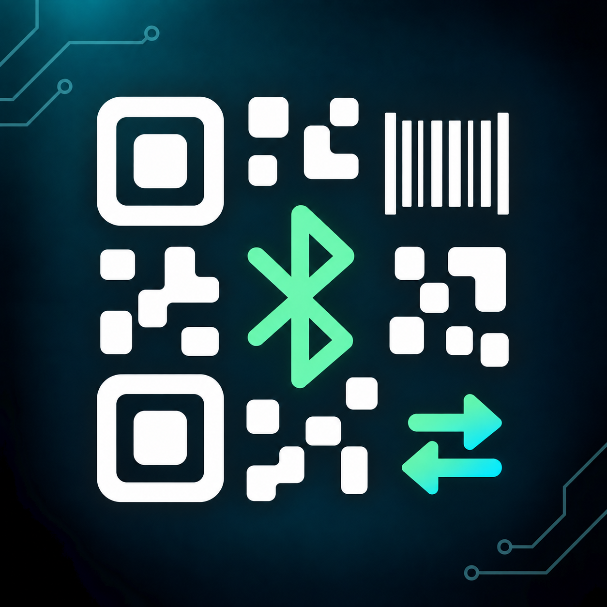

⚡ Práctico primero
Flujos cortos, lenguaje claro y acciones pensadas para usarse con prisa, en taller o en campo.
UXmenos pasosuso real
StroyApps convierte problemas concretos en herramientas Android prácticas. El proyecto principal es REGA, una app de control ganadero diseñada para seguir siendo útil aun cuando la conexión a Internet no esté disponible.
El foco está en herramientas que reduzcan pasos, funcionen en condiciones reales y den control sobre los datos. Lo visual importa, pero nunca por encima de la utilidad.
Flujos cortos, lenguaje claro y acciones pensadas para usarse con prisa, en taller o en campo.
Medir, reproducir, probar y corregir. Las versiones pasan por pruebas técnicas y revisión visual antes de avanzar.
Cuando la señal falla, la herramienta no debería desaparecer. REGA prioriza operación local y usa la nube como opción, no como requisito para lo esencial.
REGA ya se encuentra en canales de prueba de Google Play. Scan QR Fácil continúa como herramienta complementaria para captura y envío de códigos.
Control ganadero desde el teléfono: animales, fotografías, nacimientos, genealogía, sanidad, pesaje, ordeña, alimentación, lotes, potreros, movimientos, reportes, auditoría, papelera, exportaciones y respaldos.

Escanea QR y códigos de barras y envía el contenido a una PC mediante modos de conexión compatibles. Incluye historial y flujos pensados para reducir transcripción manual.
Una función no se considera terminada solo porque compile. Tiene que sobrevivir datos reales, cuentas distintas, borrados, restauraciones, idiomas y escenarios incómodos.
Definir el problema concreto y el flujo que realmente necesita la persona.
Implementar una versión utilizable con el menor número posible de piezas innecesarias.
Buscar fallos lógicos, regresiones, problemas de cuenta, seguridad, rendimiento y traducción.
Probar en dispositivos reales, reducir fricción y repetir hasta que el flujo resulte natural.
Los reportes de pruebas ayudan a que REGA llegue más limpia y útil a producción.